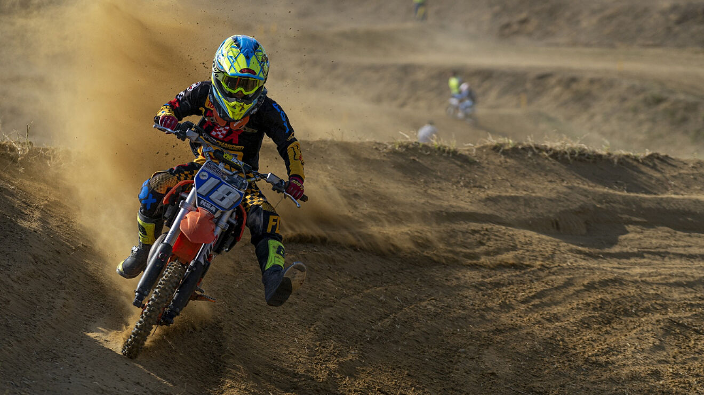

Motocross
¿Que es este deporte y como se practica?
El motocross es una competición enfocada en las motocicletas todo terreno y es celebrada en circuitos
cerrados. En esta disciplina se combina la velocidad de la máquina con la destreza del conductor para
pilotear en terrenos con curvas cerradas, montículos, baches y, a veces, hasta en una superficie de
tierra mojada; lo que suele provocar accidentes.
Por estas circunstancias, una característica de los conductores es su resistencia y fortaleza física.
Su nombre surge de la combinación de 'Cross Country,' que era una carrera que se disputaba a caballo
o en ocasiones a pie, y de la palabra 'moto'.}
Tuvo sus inicios en el norte del Reino Unido y durante la década de los 30' se popularizó y se
empezaron a crear los nombres de algunas equipos como: Birmingham Small Arms, Norton y Matchless.
